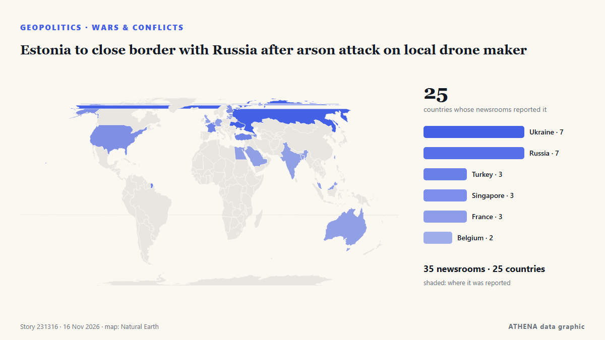

ATHENA Glaux Intelligence — Παγκόσμια ειδησεογραφική ανάλυση — κάθε αριθμός εξηγημένος
Κάθε είδηση, ελεγμένη σε πολλές χώρες.
Το ATHENA Glaux παρακολουθεί 629 ειδησεογραφικά μέσα σε όλο τον κόσμο. Μια είδηση γίνεται επαληθευμένο γεγονός μόνο όταν την αναφέρουν ανεξάρτητα μέσα. Κάθε γεγονός δείχνει ποιος το ανέφερε πρώτος και έναν βαθμό κινδύνου με τους λόγους του.
Αναφορές έρχονται από ανεξάρτητα μέσα — όταν δύο συναντηθούν στην ίδια ιστορία, γίνεται επιβεβαιωμένο γεγονός.
Τρεις τρόποι να διαβάσετε σήμερα
Ξεκινήστε από αυτόν που ταιριάζει στον χρόνο σαςΕπαληθευμένα γεγονότα
Κατά σειρά έκτασης της κάλυψης
- Israel: Party chiefs say Netanyahu's election fraud claims a coup attempt159 μέσα · 56 χώρεςΚίνδυνος 4.7
- Trump on ’60 Minutes’ Reflects on Midterm Loss, Death and Forgiveness: ‘I Do Hate Some of My Enemies’106 μέσα · 43 χώρεςΚίνδυνος 6.7
- Κίνδυνος 3.9
- Oil tanker on fire after hitting mine in Strait of Hormuz52 μέσα · 30 χώρεςΚίνδυνος 3.0
- Κίνδυνος 3.0
Γραφείο Ανάλυσης
Κάντε μια ερώτηση και διαβάστε τεκμηριωμένη αξιολόγηση μιας βασικής είδησης, μαζί με το τι θα την διέψευδε.
Ανοίξτε το Γραφείο Ανάλυσης ›Πώς ελέγχει το ATHENA μια είδηση
- ΣυλλογήΟι αναφορές φτάνουν από ανεξάρτητα μέσα σε πολλές χώρες.
- ΑντιστοίχισηΌταν δύο μέσα συναντιούνται στην ίδια είδηση, γίνεται επαληθευμένο γεγονός.
- ΕξήγησηΚάθε γεγονός δείχνει ποιος ήταν πρώτος, πόσο εξαπλώθηκε και γιατί ο κίνδυνος είναι αυτός.

ΓεωπολιτικήEstonia to close border with Russia after arson attack on local drone maker
Estonia plans to close its road border crossings with Russia in response to an attempted arson attack against Estonian defense company Threod Systems. από Defense News
Οι τίτλοι των ειδήσεων παρουσιάζονται στα αγγλικά, όπως δημοσιεύτηκαν.
Senior Hamas commander who helped oversee Oct. 7 attack killed in Israeli strike in Gaza
Hamas said on Sunday that a senior commander who helped plan and oversee the Oct. από CBC News
Yemen government forces withdraw from area near Bab el-Mandeb Strait, Houthis in control
Yemeni forces fighting for the internationally recognised Saudi-backed government said on Sunday that they were withdrawing from an area overlooking the strategic Bab el-Mandeb Strait, leaving the… από Business Recorder

2 violating oil tankers explode in south Hormuz Strait: IRGC
TEHRAN, Nov. 15 (MNA) – The Public Relations Office of the IRGC Navy Force has announced that two oil tankers caught fire and exploded in southern Strait of Hormuz. από Mehr News (English)
Trump on ’60 Minutes’ Reflects on Midterm Loss, Death and Forgiveness: ‘I Do Hate Some of My Enemies’
President Trump told “60 Minutes” that he blames Republican candidates and the war in Iran for the party’s midterm defeat, and acknowledged that his mass deportation policy was “too tough.” Sitting… από Variety
Israel: Party chiefs say Netanyahu's election fraud claims a coup attempt
Netanyahu subsequently accused Arab parties of electoral fraud after they gained a record number of seats. από Africanews (English)
Γεωπολιτική, Πολιτική & Ασφάλεια
Περισσότερα ›‘Emperor’s New Clothes’: Burnham breaks 10-year taboo on Brexit
Boris Johnson's 'oven ready' Brexit deal never tasted very good. από EUobserver
- Διπλωματία & σύνοδοι
Trump says he may meet with Kim Jong-un while in China
- Πόλεμοι & συγκρούσεις
After Yemen setback, Saudi Arabia replaces military commander
- Πόλεμοι & συγκρούσεις
Ukraine hits Kerch bridge between Russia and occupied Crimea
- Πόλεμοι & συγκρούσεις
Russia Says Its Defenses Intercepted over 1,300 Ukrainian Drones in a Major Attack
Οικονομία, Χρηματοοικονομικά & Αγορές
Περισσότερα ›Customers at major US banks report difficulty accessing accounts online
NEW YORK: Customers reported difficulty accessing the online accounts at some major banks Monday. από Arab News
- Πληθωρισμός & επιτόκια
Dollar hits highest since April 2025 as Fed rate bets lend support
- Μετοχές, ομόλογα & αγορές
Russell Brand could face prison discipline after wife shares his jail message
- Τράπεζες & πίστη
US banking app users report outages from software bugs
- Κρυπτονομίσματα & ψηφιακά στοιχεία
Binance Aims to Reopen Withdrawals After $6.3 Billion Hack
Εμπόριο, Βιομηχανία & Υποδομές
Περισσότερα ›Scope of cooperation between Russia and Vietnam expanding — Kremlin aide
On November 18, on the sidelines of the APEC summit in Shenzhen, Vladimir Putin will hold a meeting with To Lam, General Secretary of the Central Committee of the Communist Party of Vietnam and… από TASS (English)
- Αερομεταφορές, σιδηρόδρομος & οδικές
United Airlines says ‘widespread’ system outage resolved
- Ναυτιλία & λιμάνια
Iran says 2 oil tankers hit mines, catch fire in Strait of Hormuz
- Ναυτιλία & λιμάνια
Third violating oil tanker explodes in Hormuz in 24 hours: Iran’s Navy
- Κρίσιμες υποδομές
Met Office confirms date UK snow will return after 11-hour flurries on Tuesday
Ενέργεια, Πόροι & Περιβάλλον
Περισσότερα ›COP31 draft deal calls for ‘accelerated action’ to exit fossil fuels
Draft urges countries to raise electricity's share of final energy demand to 35% by 2035. από Express Tribune
- Πετρέλαιο & φυσικό αέριο
Iraq Oil Exports Top 3 Million Barrels a Day
- Πετρέλαιο & φυσικό αέριο
ExxonMobil starts Uaru production, lifting Guyana capacity to 1.1 MMbpd
- Κλίμα & κλιματική πολιτική
Armenian Australians Press Albanese Over Erdogan Meeting at COP31
- Κλίμα & κλιματική πολιτική
From Health Resilience to Energy Transition, Global Climate Commitments Face the Test of Delivery
Τεχνολογία, ΤΝ & Κυβερνοασφάλεια
Περισσότερα ›(LEAD) PM vows to mobilize all national capabilities to prevent AI cheating on college entrance exam
SEOUL, Nov. 16 (Yonhap) -- Prime Minister Han Seong-sook pledged Monday to mobil... από Yonhap (English)
- Επεξεργαστές & υπολογιστική
Trump's "Beautiful Woman From China" Remark As He Backs Jensen Huang's Nvidia Return
- Τεχνητή νοημοσύνη
Top scorer of tax accountant exam apologizes for cheating before police questioning
- Τεχνητή νοημοσύνη
California sues OpenAI over the rogue AI agents that hacked Hugging Face
- ΜΜΕ & παραπληροφόρηση
Europe hunts for Palantir alternatives as militaries seek to limit US dependence
Επιχειρήσεις, Εταιρείες & Επενδύσεις
Περισσότερα ›Trump administration targets further limits on skilled foreign workers
The US plans tougher green card rules for companies hiring foreign workers, with stricter recruitment checks, a 90-day job advertising requirement and restrictions on employers that have recently… από Livemint
- Συγχωνεύσεις & εξαγορές
NGX Group acquires 10% stake in Nairobi securities exchange
- Εταιρική στρατηγική
Kosovo demands EU explanation over Serbian nationalist song at Brussels forum
- Συγχωνεύσεις & εξαγορές
NCP(SP)’s Supriya Sule seeks ‘one formula for every state’ during delimitation
- Επενδύσεις
MSC Cruises to launch Singapore-based sailings from 2028, with voyages across Southeast Asia
Η σημερινή εικόνα
| 04:00 | 551 |
|---|---|
| 05:00 | 369 |
| 06:00 | 407 |
| 07:00 | 431 |
| 08:00 | 865 |
| 09:00 | 650 |
| 10:00 | 288 |
| 11:00 | 392 |
| 12:00 | 450 |
| 13:00 | 341 |
| 14:00 | 730 |
| 15:00 | 549 |
| 16:00 | 669 |
| 17:00 | 497 |
| 18:00 | 476 |
| 19:00 | 632 |
| 20:00 | 549 |
| 21:00 | 555 |
| 22:00 | 491 |
| 23:00 | 385 |
| 00:00 | 315 |
| 01:00 | 299 |
| 02:00 | 423 |
| 03:00 | 270 |
Κίνδυνος των σημερινών γεγονότων
Με την ευρύτερη κάλυψη
Αναδυόμενα σήματα
- Απότομη αύξηση · Ενεργό τώραPietermaritzburg
- Απότομη αύξηση · Ενεργό τώραPretoria
- Απότομη αύξηση · Ενεργό τώραInternational Organisation of La Francophonie
- Νέο όνομα στις ειδήσεις · Ενεργό τώραTelkom
- Νέο όνομα στις ειδήσεις · Ενεργό τώραCrimean Bridge
Μείνετε ενημερωμένοι
ATHENA Weekly Risk Picture
Οι μεγαλύτεροι γεωπολιτικοί, οικονομικοί και ναυτιλιακοί κίνδυνοι της εβδομάδας, διασταυρωμένοι και βαθμολογημένοι.
Κάθε Παρασκευή στις 08:00 ώρα Ελλάδας · δωρεάν · στα αγγλικά
Δωρεάν εγγραφήΤο ATHENA στο Telegram
Οι ειδήσεις τη στιγμή που δημοσιεύονται: έκτακτα γεγονότα με κίνδυνο 6 ή περισσότερο, ωριαία σύνοψη, ενημερώσεις κινδύνου και η ημερήσια ενημέρωση στις 10:00.
Δωρεάν · αναρτήσεις στα αγγλικά · αποχωρείτε όποτε θέλετε
Είσοδος στο κανάλιΤην εγγραφή τη διαχειρίζεται η beehiiv με διπλή επιβεβαίωση: τίποτα από όσα πληκτρολογείτε δεν αποστέλλεται στο ATHENA, και κάθε τεύχος έχει σύνδεσμο διαγραφής.
Παρακολούθηση κινδύνων
Περισσότερα ›Παγκόσμιοι κίνδυνοι — εβδομάδα 47, 2026 (16–22 Νοε) ›